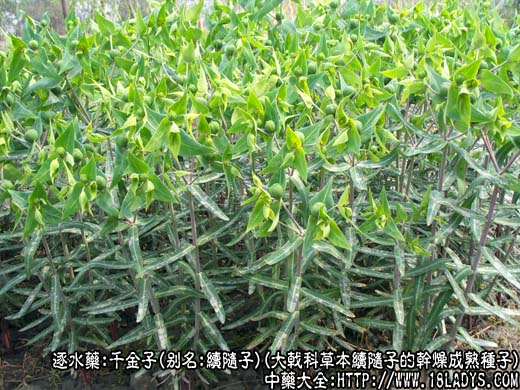
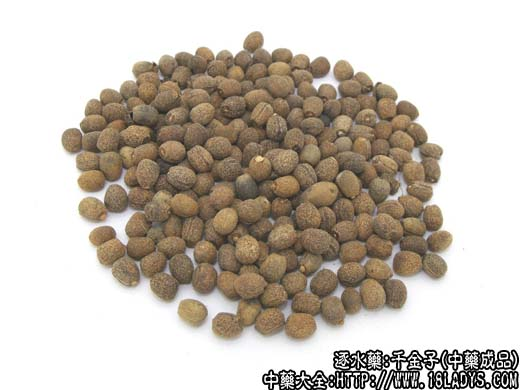
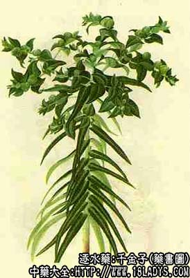

别名：续随子。
来源：为大戟科二年生草本植物续随子的干燥成熟种子。多为栽培。
产地：主产于河南禹县，浙江杭州，此外河北、四川、辽宁、吉林等地亦产。
性状鉴别：种子呈椭圆形或卵圆形，长约6毫米，直径约5毫米。一端粗圆，另一端较细，且有一疙瘩状物（种阜），通常已脱落，留下一个小白点，并呈斜切面状。表面灰棕色，有网状皱纹，一侧具凹沟样种俏。种皮薄而硬脆，破开，子仁椭圆形，黄白色，有光泽，有两片子叶。油性很大，手压之即可流出透明的油脂，味辛有毒。
以粒充实饱满，无杂质者为佳。
主要成分：秦皮素、瑞香素、脂肪油（占40%～46%）、树胶质等。
功效与作用：利尿和峻泻，功效不比大戟、甘遂差，但毒性也较大，故前人的经验说：“续随子下水最速，然有毒损人，不可过服”，中毒时可出现剧烈呕吐、腹泻、头晕、躁狂、体温增高、出汗等症状。本药不宜大量或长期服用，体虚者也不要服。
炮制：剥去种皮取仁，榨出油脂取霜。
性味：辛温、有毒。
归经：入肝、肾、大肠经。
功能：泻水消肿，破血通经。
主治：水肿胀满，腹水经闭，瘀血积块。
附：种子含脂肪油40%～46%及七叶亭0.6%，脂肪油内含大戟乳脂。
临床应用：主要用于治疗肝硬化腹水和晚期血吸虫病，属水肿实证、体质尚好、大小便不通畅者，可取白色子仁，捣成泥状，装入胶囊，每次服6g，清晨空腹服，服后三小时内可见唾液分泌增加、头晕、恶心、腹泻，三小时后恢复。病情轻者单服一次便见效。一般要每隔5天服药1次，共服2～3次。传统经验认为服续随子忌食硷盐和难消化的食物。
另一用法为服千金霜，可用续随子去亮，并研压弃油，然后再研末成“千金霜”，每次服0.3～0.45g。
用量：每次1.5～4.5g，多入丸散用。霜用则0.3～4.5g便可。
处方举例：千金霜0.45g，空腹开水送服，每天1次，连续二天。